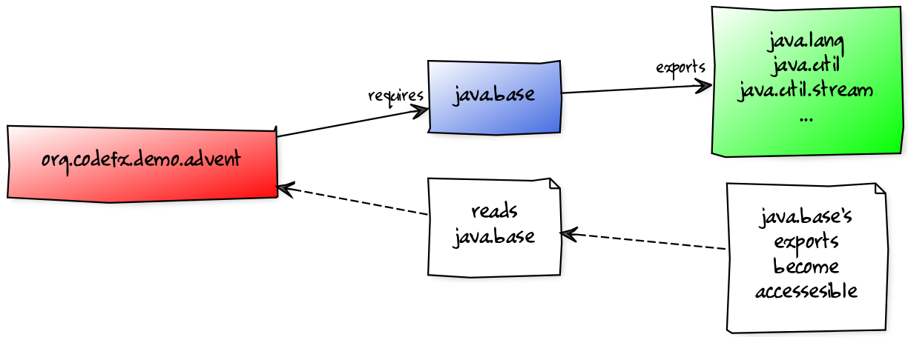
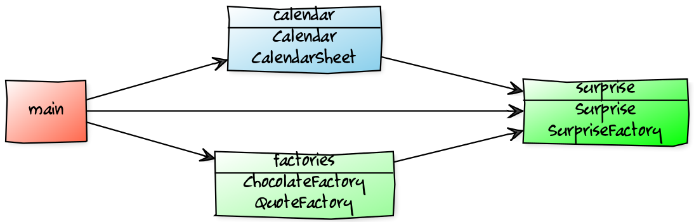

module $module_name {
requires $other_module;
exports $api_package;
}Jigsaw Walkthrough
Impedance Mismatch
Where the JVM disagrees with us
How do you think about Software?
What is it made of?
How I think about Software
interacting parts
parts have
names
dependencies
capabilities
creates a graph
How the JVM thinks about it
parts are packaged as JARs
to the JVM JARs
have no names
dependencies are unexpressed
have no coherent surface
JVM rolls them into one big ball of mud
Consequences
unexpressed, transitive dependencies
shadowing, version conflicts
complex class loading
slow
unsecure
maintenance nightmare
Project Jigsaw
Teaching the JVM about that graph
Quick History
- 2005
first discussions about modularity in JDK
- 2008
Project Jigsaw is created
- 2011-2014
exploratory phase; ends with JSR 376
- 2015
prototype is released
- 2017
Java 9 gets released with Jigsaw
Disclaimer / Call to arms
all is based on a prototype
everything can change
this is the time for community feedback
Goals
Reliable Configuration
Strong Encapsulation
Scalable Systems (esp. the JDK)
Security
Performance
Maintainability
Means
Introducing modules, which
have a name
express dependencies
encapsulate internals
Everything else follows from here!
Concepts & Features
Modules, Readability, Accessibility
Implied Readability, Qualified Exports
Modular JARs, Module Path, Module Graph
Services
Unnamed Modules, Automatic Modules
Reflection, Layers
Runtime Images
Modules
Pieces of a puzzle
These are the nodes in our graph.
Description
Modules
have a unique name
express their dependencies
export specific packages
(and hide the rest)
Implementation
Modules are JARs with a
module-info.class
(aka Modular JAR)gets generated from
module-info.java:this is called a Module Declaration or a
Module Descriptor
Readability
Putting the pieces together
Readability brings edges into our graph.
It is the basis for Reliable Configuration.
Description
For two modules A and B with
module A {
requires B;
}we say
ArequiresBAdepends onBAreadsBBis readable byA
Reliable Configuration
Java will only compile/launch when
every dependency is fulfilled
there are no cycles
there is no ambiguity
Accessibility
Hiding internals
Accessibility governs which types a module can see.
It builds on top of Readability.
It is the basis for Strong Encapsulation.
Description
A type in one module is only accessible
by code in another module if
the type is public
the package is exported
the second module reads the first
Strong Encapsulation
publicis no longer publiceven reflection doesn’t work
command line provides escape hatches
Consequences
great boost for maintainability
also the major reason for community unrest
it looks like critical APIs will survive until Java 10
(e.g.sun.misc.Unsafe— see JEP 260)
Jigsaw Advent Calendar
A running example
All examples are based on this toy project.
Find it on GitHub!
Structure

Code
public static void main(String[] args) {
List<SurpriseF_> fac = asList(
new ChocolateF_(), new QuoteF_());
Calendar cal = Calendar.create(fac);
println(cal.asText());
}A single module
Modularization

module advent {
// java.base is implicitly required
// requires no other modules
// exports no API
}(Boring...)
A single module
Readability & Accessibility

Multiple Modules

Multiple Modules
module surprise {
// requires no other modules
exports org.codefx.demo.advent.surprise;
}module calendar {
requires surprise;
exports org.codefx.demo.advent.calendar;
}module factories {
requires surprise;
exports org.codefx.demo.advent.factories;
}module main {
requires calendar;
requires factories;
requires surprise;
}Multiple Modules
Compilation, Packaging, Execution
# First compile/package the other modules
# ('surprises', 'calendar', 'factories')
# into folder 'mods'.
# Compile/package 'main':
javac -mp mods -d classes/advent ${*.java}
jar -c --file=mods/advent.jar
--main-class=org.codefx.demo.advent.Main
${*.java}
# Launch the application:
java -mp mods -m adventNow What?
what could possibly go wrong?
what happens then?
what about migration?
…?
Compatibility I
Some internal changes can break existing code!
Just by running on JDK 9
(i.e. even without modularizing the application)
Compatibility II
Reliable Configuration
exported packages should have a unique origin
no module must read the same package
from two modulesi.e. no "split packages"
Compatibility III
Strong Encapsulation
Compatibility IV
Modular Run-Time Images (JEP 220)
new JDK/JRE layout
unavailability of internal JARs (e.g.
rt.jar)new URL schema for runtime image content
removal of Endorsed Standards Override Mechanism
removal of Extension Mechanism
Annex
Image Credits I
disy-landscape
© Disy Informationssysteme GmbHbinary-code: Christiaan Colen (CC-BY-SA 2.0)
ball-of-mud-2: Andi Gentsch (CC-BY-SA 2.0)
jar-hell: Wellcome Library, London (CC-BY 4.0)
puzzle-cubed: David Singleton (CC-BY 2.0)
flag-amsterdam: George Rex (CC-BY-SA 2.0)
Image Credits II
puzzle-piece-green: StockMonkeys.com (CC-BY 2.0)
puzzle-pieces-put-together:
Ken Teegardin (CC-BY-SA 2.0)iceberg: NOAA’s National Ocean Service (CC-BY 2.0)
class and module diagrams:
Nicolai Parlog (CC-BY-NC 4.0)question-mark: Milos Milosevic (CC-BY 2.0)